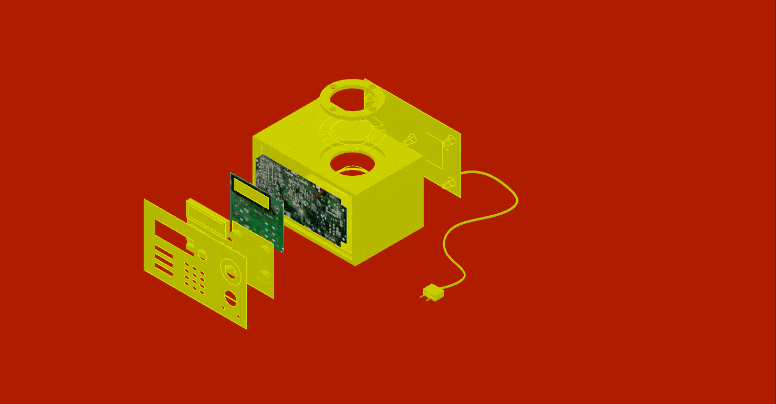

Unpacking Tech Systems¶
Forensic Report: The Radio¶

| Identity of the reporting agency | MDEF |
|---|---|
| Case identifier | Forensics of the Obsolescence |
| Identity of the submitter | Hannah Peevey, Ishan Mudgal, Maryam Shojaei, Sıla Kara |
| Date of receipt | 19.11.2024 |
| Date of report | 20.11.2024 |
| Identity and signature of the examiner | Hannah, Ishan, Maryam, Sıla |
| Status | Somehow Works |
The Radio¶

:::info
Brand: Sunstech Serial number: SPA / 090100471 Model: Arch Audio RP-RD3000 Colour: Dark Wood (Box), Black (Back and Front Face) Made in: China :::
Examination¶
| Picture | Part Name | Serial number | Quantity | Specifications | Made in |
|---|---|---|---|---|---|
 |
Outer Body | - | 1 | wood veneer | - |
 |
Front panel | - | 1 | injection-molded plastic | - |
 |
Buttons | - | 1 | silicon plastic : power, band selection, tuning, volume, preset selection | - |
 |
LCD screen Board | H5080key Ver 2.0 | 1 | Board | HAMco |
 |
Cupper Sheet | - | 1 | Electromagnetic shielding | - |
 |
Main Radio Board | H5080 Radio Ver 1.8/2008 02 18 | 1 | silicon plastic : power, band selection, tuning, volume, preset selection | HAMco |
 |
Alarm Button | - | 1 | injection-molded plastic | - |
 |
Sleep Button | - | 1 | injection-molded plastic | - |
 |
Speaker | - | 1 | Single internal speaker for audio output | - |
 |
Speaker Mesh | - | 1 | Protects speaker and allows sound through | - |
 |
Speaker Plastic washer | - | 1 | Secures speaker, reduces vibration, prevents rattling So together | - |
 |
Rotary volume control knob | - | 1 | User interface for adjusting volume | - |
 |
Power supply transformer | YSP-1120070V | 1 | Converts mains AC voltage to lower DC/AC voltage for the circuit | |
 |
Rear Panel | - | 1 | providing access to power and internal components, injection-molded plastic | - |
 |
Battery Cover | - | 1 | A removable plastic cover that protects the batteries | - |
 |
Batteries | - | 1 | Provide portable power when the radio is not connected to AC | - |
Forensic Questions¶
What does it do?¶
The Sunstech RPRD3000 is a portable/desktop AM/FM radio designed mainly for home use. According to the product information and its manual, it offers: - AM and FM radio reception - Built-in loudspeaker for audio playback - Station presets (memory storage) - LCD display for tuning and functions - AUX-IN input to play external audio devices
Overall, it functions as a retro-style radio with additional audio playback capabilities.
How does it work?¶
The Sunstech RPRD3000 is an analog radio receiver with digital controls. Its operation is based on receiving radio frequency (RF) signals, converting them into audio signals, and playing the sound through its internal speaker.
1) Radio Signal Reception The internal AM/FM antenna captures electromagnetic radio waves from broadcasting stations. The tuner selects a specific frequency in either the AM or FM band. A tuning circuit filters out all other frequencies, allowing only the chosen station to pass through.
2) Signal Conversion Once the radio wave is received: The tuner sends the RF signal into the demodulator. The demodulator separates the audio information from the RF carrier wave. The extracted audio becomes a low-level signal — too weak to hear yet. This is the basic principle of AM/FM demodulation.
3) Audio Amplification A built-in audio amplifier increases the strength of the audio signal. The amplified signal drives the internal 4W RMS loudspeaker. This turns the electrical audio signal into audible sound (vibrations in air).
4) Display and Controls A microcontroller inside the device reads user input from buttons: - Power - Band selection (AM/FM) - Tuning up/down - Volume control - Station presets
It shows tuning frequency and settings on the LCD screen. So although the radio technology is analog, the user interface is digital.
5) AUX Mode When an external device (like a phone) is connected the AUX input bypasses the radio tuner. The external audio directly enters the amplifier, using the radio as a speaker system. No radio signal involved, just audio playback through its internal speaker.
6) Power System The device mainly runs from AC mains power. It may also include a backup power function to retain saved stations if unplugged.
Radio Waves → Antenna → Tuner → Demodulator → Audio Amplifier → Speaker → Sound ↓ Microcontroller → LCD + Controls
In AUX mode:
External Device → AUX Jack → Audio Amplifier → Speaker → Sound
How is it built?¶
It is constructed as a simple consumer-grade audio device: low-power electronics, mass-produced chassis, and standard loudspeaker design.
The base for the build is a wood casing open on the front and back. The plastic plates on the front and the back connect to each other from within the casing while holding two circuit boards and other components between them.
The back plate also has a battery box, and a connection point for the antenna. It also holds the transformer and its cable, and has an outlet for the cable to the plug. It has plastic extrusions to screw to the front plate through the inside of the radio device.
Why it failed, or it wasn’t used anymore?¶
Although the Sunstech RPRD3000 was fully functional and still working properly, it gradually became less practical for modern users. The device is based on traditional AM/FM radio technology and does not include features such as: - Wi-Fi or Internet radio - Bluetooth connectivity - Streaming services - Smart functions or app integration
Because today most people listen to music, radio stations, and podcasts online through smartphones, smart speakers, or Bluetooth systems, this type of standalone radio is considered outdated. So, the device did not fail technically — it simply became less relevant due to changes in consumer habits and modern audio technology.
Steps taken¶
- Cleaned the dust off the raido and brought it to the MDEF room.
- Disassembled using our toolbox.
- Separated into three main parts as follows:
- The box/case
- Back and front plastic cover
- Inner electronics and plastics
- Laid out all parts individually and documented.

Testing¶
After the disassembly process, we meticulously examined each individual component. Utilizing a precision lab power supply and a high-resolution multimeter, we conducted comprehensive tests to determine the optimal voltage required for each component’s functionality.
Report on Speaker and Amplifier¶

What we found inside¶
Our original device was a Sunstech Arch Audio RP-RD3000 radio. We opened it to explore the audio components and understand how the sound was originally generated and amplified. Inside, we found: - A passive speaker driver - A large main PCB containing the radio tuner, power supply, and control logic - Wires leading to where the amplifier section originally lived - A transformer-based power supply (AC-powered radio)
Our goal was to tap into the speaker system and create our own external amplifier, controlled by an Arduino.
The Speaker¶

The internal speaker was a simple passive driver, meaning: - It cannot produce sound on its own - It needs an external audio amplifier - It cannot be driven directly by Arduino pins
The two wires (yellow & black) originally connected to the internal amplifier. This meant we needed to create our own amplifier to drive it.
The Main PCB¶

The large PCB inside the radio handled: - Power regulation - Tuning circuitry - Display logic - Button scanning - Clock and memory functions
But not the audio amplification; that part is normally done by a small, separate IC or sub-board, which was not functional for our purposes.
We inspected the board to locate the amplifier stage, which is on the very left right under the heatsink. However because the radio used an integrated, transformer-powered supply, reusing this board safely would have been difficult. So instead, we abandoned the original amplifier system and built our own.

Building Our Own Amplifier¶
We tried to build a simple audio amplifier to drive the original radio speaker. The Arduino produces a low-power audio signal, so an external amplifier is needed to increase: - Voltage - Current - Power delivered to the speaker
Our amplifier design
We used a LM386 amplifier circuit, small, low-voltage, and safe to use on a breadboard.
In order to build our amplifier we needed: - LM386 chip (which we found from fablab) - 10 µF capacitor - 100 µF capacitor - 0.047 µF capacitor - 10k potentiometer (which we found from fablab) - Speaker (the one from the rdio)

Our Goal¶
Our objective was to reinterpret part of the vintage radio by allowing the Arduino to become the new “brain” of the audio system. By creating our own amplifier, we gained full control over: - Sound generation - Volume and gain - Interaction with sensors, buttons, or touch pads
Report on LCD and Control Module¶

What we found inside¶
One of the main components we wanted to work with was the comtrol module. It was a circuit board in the front that held a microcontroller, an LCD module, buttons that were activated using silicon buttons with a conductive base, and a variety of smaller components to support these.
Microcontroller¶
The board had it’s own microcontroller.

On further inspection and research, the microcontroller had functions to control the entire device. It had inputs from the buttons and outputs to the components to allow for tuning through FM and AM Oscillators, memory storage and button control to access them (through the numpad), and other such features. It allows:
Tuning function: Manual tuning (up/down) Direct tuning Seek tuning Memory function: FM/MW/LW or TV/SW/WB each band 10 stations Clock function: Dual clock function 12/24H clock Sleep timer function Alarm timer function Other function: Battery check input
Here is a detailed map:

We wanted to hack the chip to be able to access these controls but we were not sure of how to go about this.
LCD Module¶

The LCD module has number markers and some preset icons like battery low, alarm set, and a backlight. We wanted to open it up to see the component serial number, but this proved difficult due to deteriorated screws.

The pins above the controller are going to the screen and possibly some of the other pins around the microcontroller. On connecting the power button, the screen turned on, and faded away soon after, while showing the low battery message. (Indicating the activation of the battery checker?)

Here you can see the numbers and a few of the other icons.
Buttons¶
The buttons had a silicon component with a conductive base, and circuitry inbuilt in the chip.
 The circuit buttons
The circuit buttons
 The silicon buttons
The silicon buttons
 The conductive part at the back
The conductive part at the back
The alternating teeth in the circuit were fascinating, and we played with this quite a bit later on.

It was difficult to understand the different points for accessing the individual buttons and we struggled with this quite a bit.
Outputs¶
The clearly labelled outputs for the board helped us understand the controls immediately on opening the board.

The labelling for GND, POWER, BAND, FMOSC, AMOSC , BUZZ, LED, 3V3 helped us follow the circuit through and locate the oscillators, decode that the alarm used the amplifier and not a buzzer, etc.
Component Details¶
Here are further details of the components:
| Image | Component | Manufacturer | Serial no. |
|---|---|---|---|
 |
PCB | HAMco | H5080KEY |
 |
Microcontroller | Silan | SC9318FB-033 |
 |
LCD Screen | n/a | Text |
 |
Silicon Buttons | n/a | Text |
Our Goal¶
We attempted to transform part of the circuit board into capacitative touch sensors to build a digital controller

We repurposed the numpad buttons built-into the right side of the circuit board panel from the radio and connected it to the sensor pins of the Arduino.
The original board had 6 buttons on the left that were designed to change radio settings when touched; and 9 buttons on the right in the form of a numpad that were controlling saved radio stations.
To interface this with our computer, we soldered wires from the circuit-buttons on the radio’s PCB to the numbered input pins on the Arduino.

The soldering was a challenge as there were very few points for soldering. We had to use test points and other connected components to make it work.
Alongside the soldering, we set up the Arduino to work as a capacitative sensor. The code features 4 musical notes activated on touching the sensor inputs. The note was temporarily played from the buzzer on the Barduino. The code is as below:
void setup() {
pinMode(4, INPUT);
pinMode(5, INPUT);
pinMode(6, INPUT);
pinMode(7, INPUT);
pinMode(46, OUTPUT);
}
void loop() {
int touch_1 = touchRead(4);
int touch_2 = touchRead(5);
int touch_3 = touchRead(6);
int touch_4 = touchRead(7);
if (touch_1 > 100000){
tone(46, 164.81, 100);
delay(100);
}
if (touch_2 > 100000){
tone(46, 87.31, 100);
delay(100);
}
if (touch_3 > 100000){
tone(46, 110, 100);
delay(100);
}
if (touch_4 > 100000){
tone(46, 220, 100);
delay(100);
} else {
noTone(46);
}
}
Each wire acted as its own input and each channel was programmed to output a different beat or frequency whenever it was touched. Allowing the pads to act as touch-activated musical controls.
At the end, it did work as a capacitative sensor, but did not behave correctly. Instead of each pad being assigned to a different corresponding Arduino pin, most of the pads played all the notes, but with random jittering and gaps in the sound that varied from pad to pad. On connecting more than one arduino pin, it behaved as if all of them were playing continuously.
Moving Forward¶
The goal for next week is to manipulate or reinterpret the music that the radio originally played, using its touch sensor panel as a modern interactive interface. By using the Arduino, the working radio functions, one or more screens, and Touch Designer and other software, we would like to create some interesting interactive audio-visual effects and interactions.